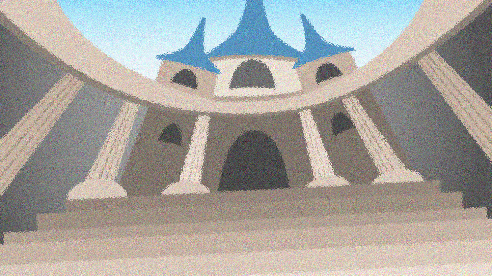

page1

"멍청이들!"
사원 벽
너머에서 울려온 그 단어가 멜로디의
귀를 때리며 차분하게 명상 중인
멜로디를 뒤흔들었다.
프레이타르의 현을 따라
춤추던 멜로디의 손가락이 멈췄다.
멜로디가 눈을 깜빡이며 따스한
녹갈색 눈동자를 드러냈다. 사원 내
성소의 아치형 석조물이 보였다.
축복받은 카코포니와의 교감을
가능하게 한 속세의 대상 때문에
경건한 마음으로 악기를 내려놓은
멜로디는 자리에서 일어나
소란스러운 목소리가 들려오는 사원
입구로 향했다.
얼굴
위를 덮고 있던 옻칠이 된 픽의
베일을 들어 올리자 소용돌이치는
향과 두 개의 태양이 내뿜는 한낮의
햇빛이 잠시 멜로디의 시선을
사로잡았다. 멜로디 앞에 도시가
펼쳐져 있었다. 신들의 선택을 받은
자에 의해 조화롭게 정제된 돌, 철,
유리가 보였다. 하늘에 떠 있는
거석은 세상의 규칙적인 심장 박동,
템포로노미콘의 울림을 더 강하게
퍼뜨렸다. 모든 것이 조화로웠다.
사원 계단 위에 있는
화난 목소리의 주인공만 제외한다면
말이다.
호리호리한
몸에 흰 피부를 지닌 젊은 남자였다.
백금색 머리가 어깨까지 내려와
있었다. 맹렬한 얼굴에 있는 눈은
타오르는 불신으로 이글거렸다.
누더기를 걸친 그는 홀로 서 있었다.
사람들은 그가 병에 걸리기라도 한
것처럼 그에게서 뒤로 물러나는
중이었다.
"당신들은
잘못된 길로 가고 말았어." 남자가
자신을 벽처럼 둘러싸고 노려보는
이들을 향해 계속해서 호소했다.
"자신만이 진실이라 주장하는 이들에
의해 기만을 당했지."
멜로디는 교정관들을 힐끗
바라봤다. 빛나는 황동 판금 갑옷을
걸친 커다란 전사들은 사원을
수호하는 이들이었지만 자신들이
지키는 석상처럼 꿈쩍도 하지
않았다.
'왜 보고만 있지?'